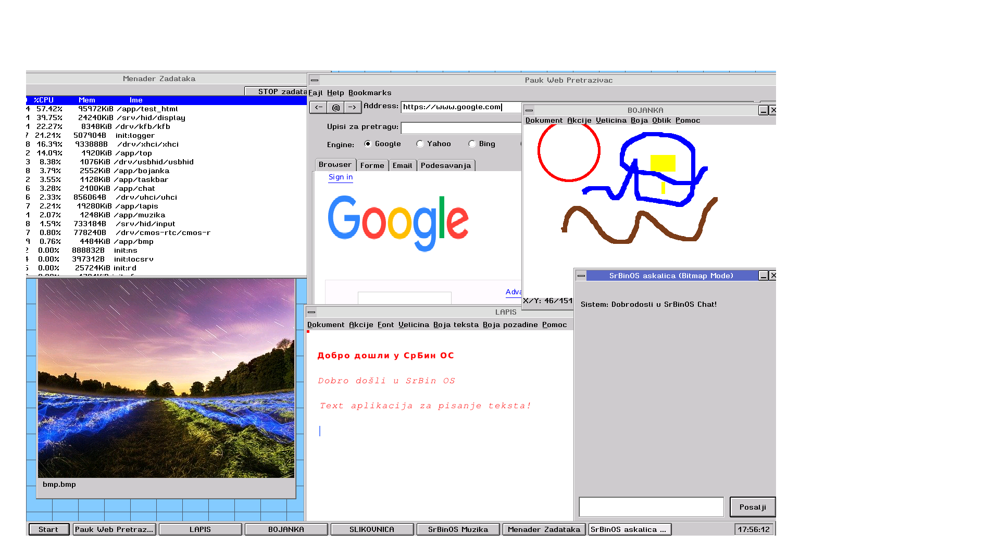

Prilagođeni 64-bitni operativni sistem sa izvornom podrškom za ćirilicu i latinicu, sopstvenim web browserom i programskim jezikom.
Prva javna verzija je u pripremi. Trenutno se finalizuje integracija Pauk browsera i Lapis podsistema.
Radna stanica sa terminalom, dvopismenom podrškom i grafičkim okruženjem.

Dodaj screenshot.png u isti folderPrvi OS sa izvornom podrškom za ćirilicu i latinicu ravnopravno — u terminalu, fajl sistemu i celom interfejsu.
Mikrokernel arhitektura bez nepotrebnih slojeva. Brzo podizanje sistema i responzivan interfejs.
Ceo sistemski kod je otvoren. Bez telemetrije, bez zaključanih delova, bez iznenađenja.
Svaka komponenta — browser, terminal, podsistemi — može se zameniti ili ukloniti bez rušenja sistema.
SrBin OS Kernel učitan uspešno (ZmajSoft unapređeno HelenOS jezgro)...
Arhitektura provere: Potpuna 64-bitna podrška detektovana.
Podrška za pisma: Ćirilica i Latinica aktivne.
srbin-os$ ls -la
srbin-os$ лс -ла
srbin-os$ ./chat
[SrBinOS Chat] Povezivanje na LLM servis...
[SrBinOS Chat] Odgovor primljen ✓
SrBin OS se oslanja na mikrokernel arhitekturu sa značajno modifikovanim i unapređenim vitalnim podsistemima, što sistemu pruža jedinstvenu stabilnost i brzinu.
Ugrađena izvorna podrška za tastaturne rasporede i prepoznavanje sistemskih naredbi ravnopravno na ćiriličnom i latiničnom pismu.
Namenski programski jezik usko integrisan u ekosistem OS-a, dizajniran za brz razvoj sistemskih i aplikativnih rešenja.
Izvorni, lagani web browser pisan u čistom C-u. Modularan, sa direktnim renderovanjem grafike u RGBA formatu i podrškom za TTF fontove.
Ključna komponenta za obradu podataka i struktura, radi u direktnoj sprezi sa jezgrom za brzo procesiranje resursa.
Bazični ISO dolazi u prekompajliranoj formi, dok su sve prateće aplikacije i alati otvorenog koda i dostupni zajednici.